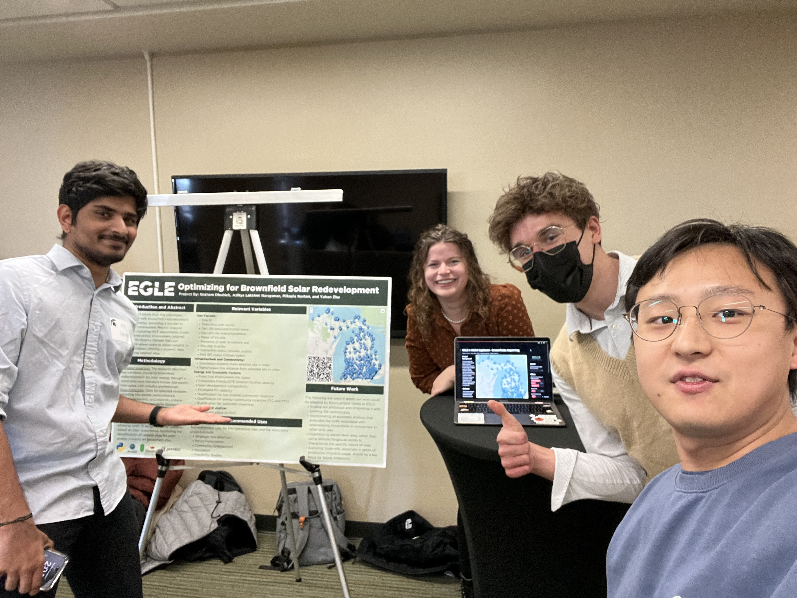

I’m a data science graduate with a background in physics, living in Michigan with my wife. I enjoy making sense of things—and making things that are useful.
I’m drawn to physics, computational modeling, and new technology. I like using data to answer questions, understand results, and solve practical problems—from building applications and simulating the solar system to assembling computers.
Outside of work, I enjoy traveling, photography, music, and making coffee. I’m always adding something new to my toolkit.
Education
Master of Science Program in Data Science
Michigan State University
Sep 2022 – May 2024Selected coursework
Big Data Analysis, Data Mining, Statistical Modeling for Data Science, Computational Optimization, Applied Machine Learning; Bioinformatics: Data Handling with Unix and Python, Intro to Genomics, and Transcriptomic Data Analysis.
Bachelor of Science in Physics
Michigan State University · Minor in Computational Mathematics, Science and Engineering
Sep 2018 – May 2022Selected coursework
Thermal & Statistical Physics, Electricity and Magnetism I, Electronics, Advanced Laboratory, Quantum Physics I, Intro to Nuclear Physics, Intro to Elementary Particle Physics, Computational Physics, Computational Modeling and Data Analysis, Probability and Statistics.
LEARNING BY MAKING
Projects & milestones
A selection of things I’ve built, explored, and learned along the way.
August 2024 Cost Calculator for Your Ride
Developed an interactive tool to estimate total car ownership costs, including variables like mileage, maintenance, insurance, and fuel, empowering users to make informed financial decisions by comparing different vehicles.
This tool simplifies the complex process of estimating car ownership expenses by dynamically calculating costs based on user input. It offers visualizations and customization options, making it a great resource for comparing vehicles and selecting one that fits within the budget.
Created a personalized coffee ordering platform, blending front-end and back-end technologies to deliver a seamless and efficient ordering experience for my friends stopping by my place.
The platform integrates Firebase Realtime Database for instant order processing and allows for customization of coffee orders. Designed with a responsive interface, the site ensures a smooth user experience, demonstrating my progress toward full-stack development.
Designed and developed my personal website to showcase my fun projects and life, with a focus on responsive design and user-friendly navigation.
It adapts to various devices, ensuring an optimal viewing experience. The site is continually updated to reflect evolving skills and new content. Future features will include more interactive elements and additional pages for deeper exploration of my work and interests. The site is a continuous work in progress, reflecting my evolving skills in web development.
Spring 2024 Facial Recognition Pet Dog Using Machine Learning
Developeing (yes, I am still improving and working on this) a machine learning based facial recognition system for a virtual pet dog, enhancing security by identifying familiar and unfamiliar faces.
The system utilizes CNN, SVM, and KNN algorithms to differentiate between familiar and unfamiliar faces, providing added security. Trained on the Labeled Faces in the Wild dataset, the model emphasizes real-time adaptability and accuracy. The project also considers the ethical implications of integrating such technology into everyday life.
May 2024 Digital Technology's Impact on Child Development
As part of a parenting class I took. I want to know how digital technology affects children's development, offering practical tips for parents.
This project explored how digital screens influence children's growth and behavior. It highlighted both the positive aspects, like learning opportunities, and the potential downsides, such as too much screen time. The project provided simple strategies for parents to manage their children's screen use effectively. An infographic was also created to present the findings in a clear and easy-to-understand way.
January - April 2024 Bioinformatics Courses: Data Handling, Genomics, and RNA-Seq
Completed a series of bioinformatics coursework as part of the Bioinformatics Program, focusing on data handling with Unix, Python, R, genome sequencing, and RNA-Seq analysis.
The courses covered foundational skills in Unix and Python for managing large datasets, techniques for genome sequencing and data validation, and RNA-Seq analysis, including experimental design and clustering. Practical experience was gained using the MSU High Performance Computing Cluster (HPCC) to process biological data, with a strong focus on applying these skills in real-world research contexts.
December 2023 Optimizing for Brownfield Solar Redevelopment
Created an interactive tool for selecting optimal sites for solar energy projects, focusing on brownfield redevelopment.
The project combined spatial data analysis with database management to identify the most suitable locations for solar installations. The tool assists in the decision-making process by integrating various environmental and economic factors into the site selection criteria.
Tools: Python, GIS, MySQL, Database management

April 2023 CNN Optimizer Selection for MNIST Dataset
Optimized CNN performance for handwritten digit recognition by comparing different algorithms, achieving a balance between accuracy and computational efficiency.
The project explored various optimization algorithms, such as SGD, Momentum, RMSprop, and Adam, applied to the MNIST dataset. RMSprop provided the best results, but the study also highlighted the importance of tuning hyperparameters for each algorithm. This work demonstrated a deep understanding of machine learning optimization techniques and their practical applications.
Applied machine learning techniques to predict the winner of the 2022 FIFA World Cup, providing users with an interactive web-based app to have a detailed look of how each ML models does.
The model analyzed past team performance, player statistics, and other factors to generate predictions, backed by Python script and Streamlit. Users could interact with the data and explore different scenarios. This project applied machine learning to real-world problems and showcased the development of user-friendly applications.
Developed a web-based application using Python, Streamlit, and Yahoo Finance API to analyze investment strategies in inflationary conditions, offering real-time financial insights and the data are up to date, always sync over the air.
The application integrates real-time financial data from `fredapi` and `yfinance` with visulation charts using altair package in Python, helping users evaluate different scenarios under inflationary pressures. The tool allows for input customization, providing tailored advice based on current economic conditions. The project involved both front-end and back-end development, ensuring a robust and user-friendly application.
Spring 2022 Solar System Visualization with Python
Created dynamic visualizations of the solar system's planetary trajectories, making astronomical system movement visulable through animation package Turtle in Python.
Using Python, planetary orbits were simulated with algorithms like Euler and Runge-Kutta. The resulting animations provide an engaging way to understand astronomical concepts, designed for educational purposes. The visualizations offer an interactive experience, making learning about the solar system more accessible and engaging.
Gamma-ray spectroscopy experiments using NaI and HPGe detectors, analyzing spectra to study gumma-ray and identify unknown radioactive materials.
Experiments explored gamma-ray spectroscopy principles to identify unknown radioactive sources, using NaI and HPGe detectors. Calibration techniques ensured accurate readings, with data visualization tools used to analyze spectra, identifying specific isotopes based on their unique energy signatures. The project provided valuable insights into nuclear physics and spectroscopy applications.
Used Python to model and predict global sea level changes based on historical data and carbon dioxide levels.
The project examined the relationship between carbon dioxide levels and global sea level changes, creating predictive models to forecast future trends. Time-series analysis and curve fitting techniques were applied, with the results highlighting the impact of climate change on sea levels. The project emphasized the importance of data-driven approaches to studying environmental changes.
These projects are just a glimpse of what has shaped me, and many more will define my future. I'm always excited for the new challenges and opportunities ahead. 🚀
♾️
"Love is patient, love is kind. It does not envy, it does not boast, it is not self-seeking, it is not easily angered, it keeps no record of wrongs. Love does not delight in evil but rejoices with the truth. It always protects, always trusts, always hopes, always perseveres." 1 Corinthians 13:4–7